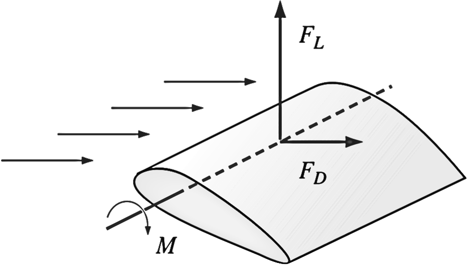

Step 8: Global properties of the flow field, such as pressure drop, and integral properties, such as forces (lift and drag) and moments acting on a body, are calculated from the converged solution. They can also be calculated during the iteration process to monitor convergence. In many cases, in fact, it is wise to monitor these quantities along with the residuals during the iteration process; when a solution has converged, the global and integral properties should settle down to constant values as well

For unsteady flow, a physical time step is specified, appropriate initial conditions are assigned, and an iteration loop is carried out to solve the transport equations to simulate changes in the flow field over this small span of time.
If a flow has a steady-state solution, that solution is sometimes easier to find by marching in time—after enough time has past, the flow field variables settle down to their steady-state values. Most CFD codes take advantage of this fact by internally specifying a pseudo-time step (artificial time) and marching toward a steady-state solution. In such cases, the pseudo-time step can even be different for different cells in the computational domain and can be tuned appropriately to decrease convergence time.
1Fluid Mechanics: Fundamentals and Applications Fourth Edition. Çengel and J. M. Cimbala, McGraw-Hill, New York (2018)